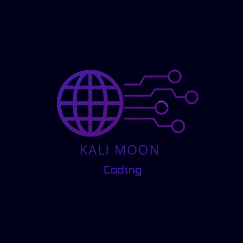

قناة Kali Moon قناة تعليمية قوية في مختلف المجالات من البرمجه و الاختراق والتصميم
نقدم محتوى تعليمي عن الحماية و الاختراق بالإضافة إلى نشر الكورسات و الدورات التي تساعدك في مجال البرمجة و الاختراق
لدينا قسم تدريبي تعليمي مجاني لتريمكس في حال لم يكن لديك حاسوب سوف تتعلم أساسيات تريمكس وبعض اوامر اللينكس وايضا سوف تختبر اختراق نفسك بواسطة ملف py